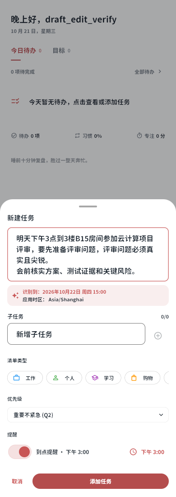
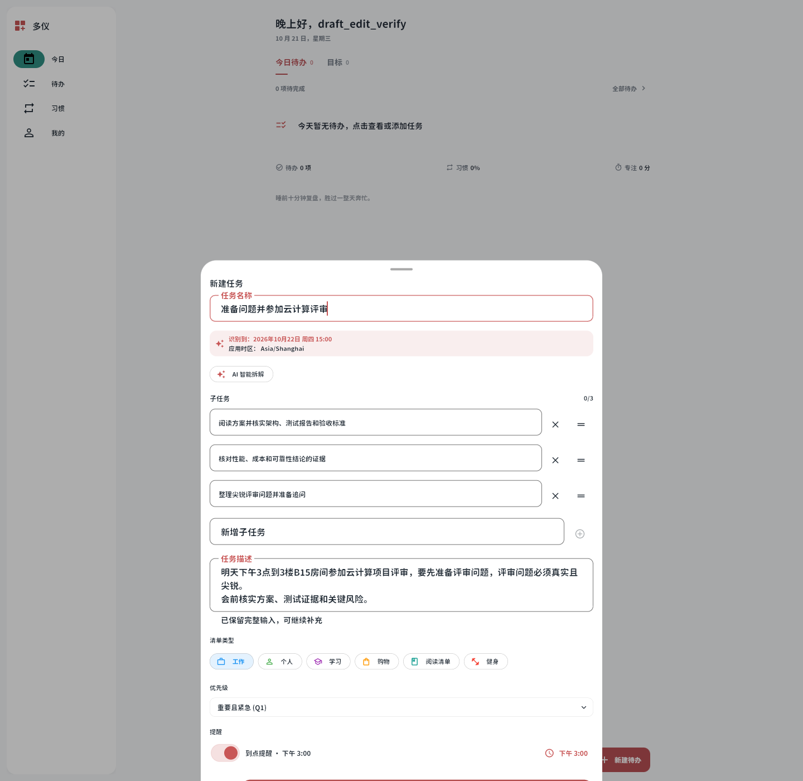
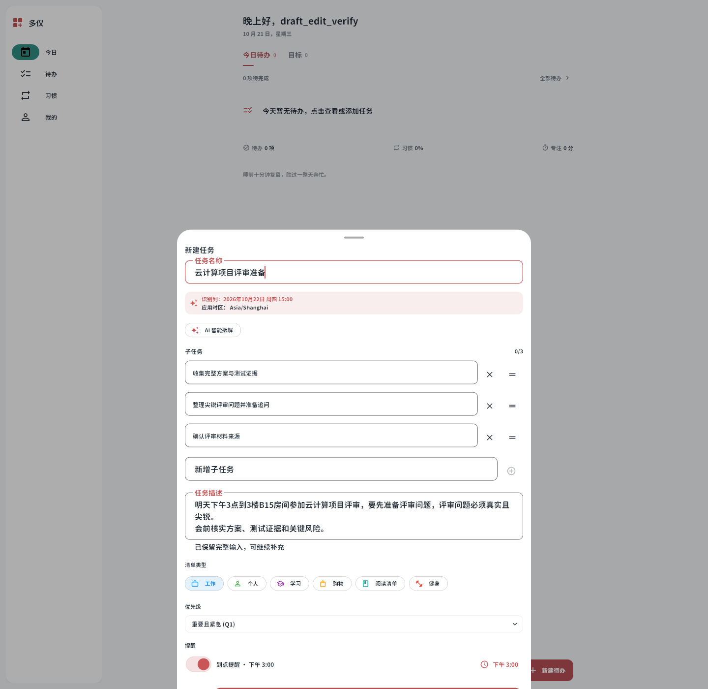
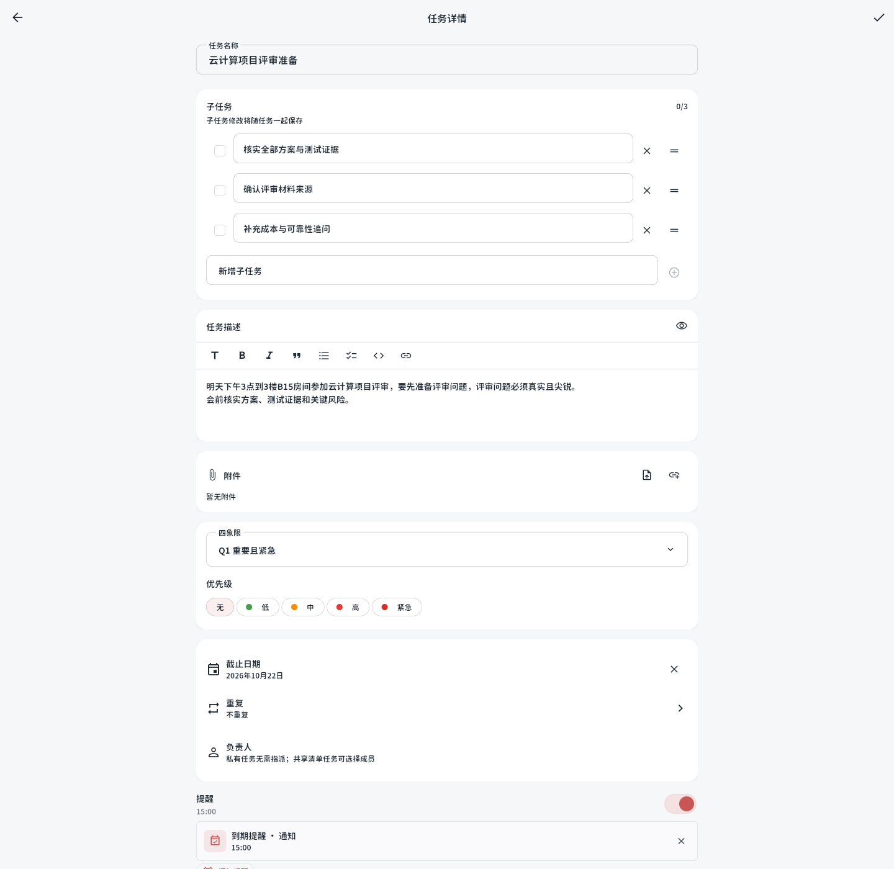
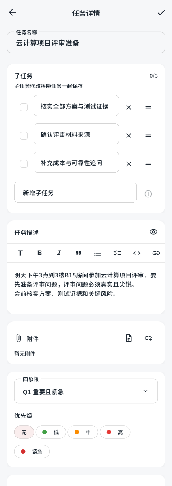

任务草稿与子任务编辑
以下均为实际 Flutter Web 发布构建截图，使用临时账号与固定测试回复。
手机长输入自动换行

AI精简名称、子任务与原始描述

新建时修改、添加与删除子任务

任务名称下方的子任务


保存重开

排序另以真实把手拖动和45帧回归检查验证，落位后不回旧序，输入控制器保持稳定。
以下均为实际 Flutter Web 发布构建截图，使用临时账号与固定测试回复。





排序另以真实把手拖动和45帧回归检查验证，落位后不回旧序，输入控制器保持稳定。